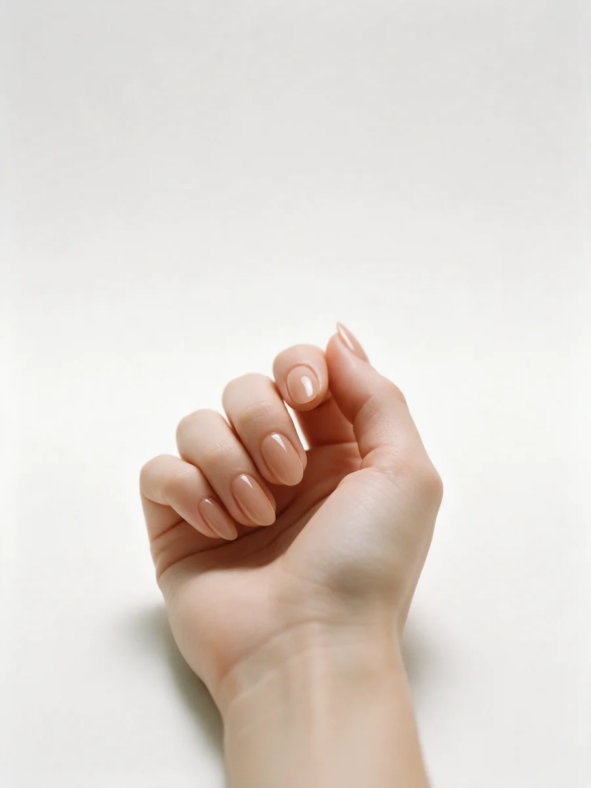
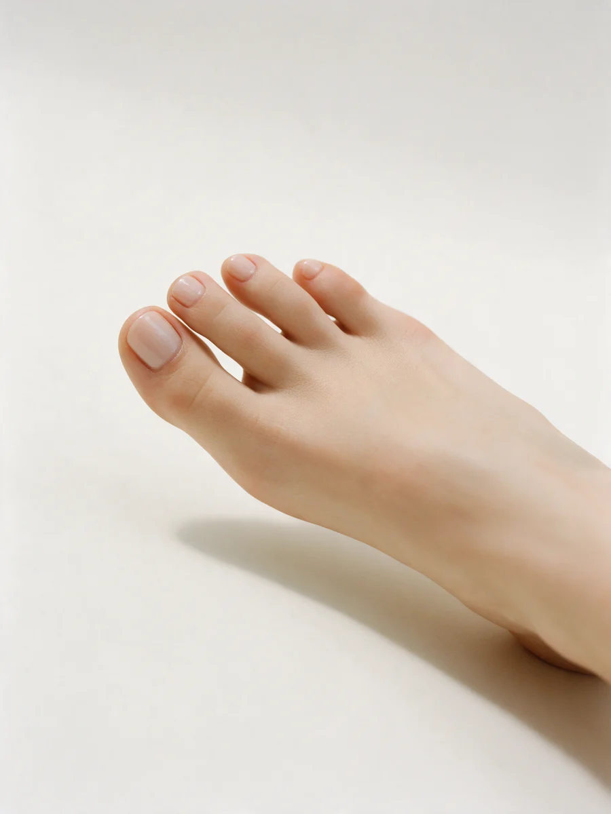
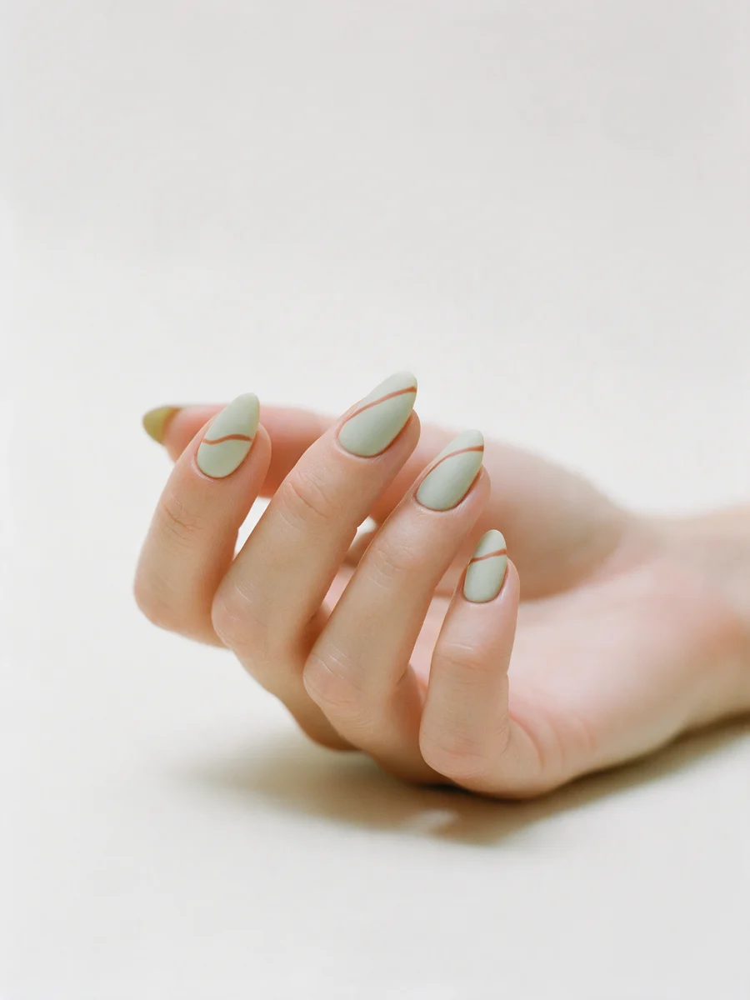

Ногтевая студия · Москва
Маникюр в Москве – цена до записи
Салон у метро Марксистская: маникюр с покрытием от 1 200 ₽. Прайс обновляется, цены – с карточки на Яндекс.Картах.

- 260 метров от метро Марксистская
- Прайс обновлён в августе
- Мужской маникюр и детский
Цена названа до записи
Цены с карточки студии на Яндекс.Картах, прайс обновлён 21 августа. Доплата только за то, что выбрали сами.
Маникюр
- Маникюр с покрытием гель-лакоднотонное, 60–90 минут1 200 ₽
- Мужской маникюробработка, 60 минут1 100 ₽
- Наращивание ногтейпо нижнему порогу, от длиныуточнить
Педикюр и ресницы
- Маникюр + педикюр с покрытиемкомби или аппарат, снятие включено3 830 ₽
- Педикюр с покрытием90 минутуточнить
- Ламинирование ресниц60 минут2 000 ₽
Время в строке – ориентир из карточки. Точную цену на дизайн назовём по фото до записи.
Как проходит запись
- 01
Пишете, что хотите сделать
Называем точную цену и свободное время.
- 02
Приходите к своему времени
Товарищеский переулок, 4 – 3 минуты от метро.
- 03
Делаем ровно то время, что в прайсе
Время в строке – реальная длительность приёма.
- 04
Откололось за неделю – переделаем
Напишите нам в тот же день.


Что обещаем
Цена до записи
Прайс обновляется, цена называется заранее.
Можно с собакой
Приходите с питомцем – мы не против.
Оплата любая
Наличные, карта, перевод – как удобно.
Отзывы с Яндекс.Карт
«отличный салон! очень понравилось обслуживание) с поставленной задачей справились на 10/10 после предложили масло для кутикулы на выбор в подарок. хожу уже 2ой год подряд!»
Вика Исаенко · 22 августа
«Отличный салон с шикарными мастерами. Уже 3й год хожу только туда. Всегда идеальная форма ногтей, ни единой отслойки за все это время. Конечно рекомендую!»
Ланниэс · 21 августа
«Хочу поблагодарить мастера Гулзину за ювелирную работу! Ногти тонкие и проблемные, но здесь смогли подобрать укрепление, которое не утяжеляет пластину. Прошло 3,5 недели, а ногти как новые, ни одного скола. Обязательно вернусь!»
Джей Джей · 23 октября
Отзывы с карточки на Яндекс.Картах, без правок.
Контакты
- Адрес
- Товарищеский пер., 4, стр. 5, этаж 2, Москва
- Часы
- Ежедневно до 22:00, по записи
- Телефон
- +7 (985) 504-20-91